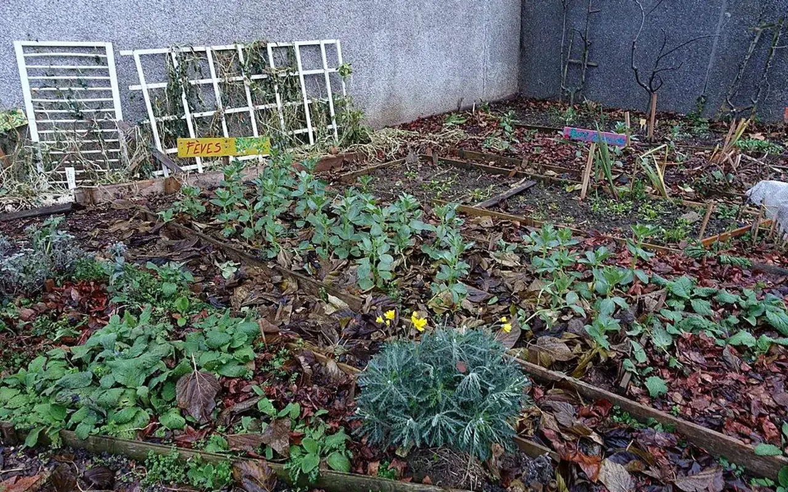

Cadre en cadrage territorial
Comment financer les projets
Présenter les leviers financiers possibles pour soutenir les projets, sans afficher de financeur ou de subvention non confirmés.

Le financement d'un projet territorial doit associer plusieurs sources, avec une gouvernance claire, des dépenses justifiées et une communication transparente.
Mécénat
Soutien financier, matériel ou de compétence apporté par des entreprises ou particuliers dans un cadre transparent.
Fondations
Dossiers align’s sur les critères de chaque fondation, sans présumer d'un accord.
Collectivités
Coopérations possibles autour du diagnostic, de l'animation territoriale, du patrimoine vacant ou des projets locaux.
Entreprises
Partenariat, don de matériaux, mécénat de compétence ou mise à disposition de ressources.
Dons citoyens
Soutien individuel à structurer avec des outils de collecte fiables et des règles de transparence.
Financement participatif
Campagnes possibles pour des projets clairement définis, localis’s et documentés.
Dispositifs publics
Veille et candidatures possibles selon les appels à projets et cadres officiels disponibles.
Principe de prudence
Aucune aide, subvention ou financeur ne doit être annoncé tant qu'un accord officiel n'a pas été obtenu et documenté.
Financer un projet sans perdre la traçabilité
Un mécène, une fondation, une entreprise ou un investisseur à impact doit pouvoir comprendre ce qui est financé, ce qui reste à obtenir, quels jalons déclenchent l'action et comment l'impact sera vérifié. TVF distingue les intentions, les budgets prévisionnels, les accords sign’s et les résultats réellement constatés.
Fiche projet
Territoire, propriétaire ou porteur, usage envisagé, diagnostics disponibles, risques identifiés, photos, calendrier et statut de validation.
Budget prévisionnel
Dépenses par poste, contributions en nature, financements recherchés, reste à couvrir et hypothèses clairement datées.
Affectation
Possibilité de soutien affecté à un projet identifié ou de soutien gén’ral à la structuration, selon le cadre convenu.
Reporting
Suivi des jalons, justificatifs, photos, décisions, écarts au budget, indicateurs d'impact et limites de publication.
Point de vigilance : aucun avantage fiscal, rendement, subvention ou soutien public ne doit être annoncé sans base juridique et document validé. Les modalités fiscales rel’vent d'une vérification spécifique selon le statut de TVF, la nature de l'apport et la situation du contributeur.
Financer la revitalisation : rendre les projets lisibles, crédibles et auditables
Les projets de remise en usage échouent rarement faute d’idées. Ils échouent plus souvent faute d’ingénierie, de données fiables, de montage juridique, de capacité à chiffrer les travaux, de garanties pour les financeurs et de suivi transparent. Le financement doit donc être présenté comme une chaîne : diagnostic, budget, risques, gouvernance, convention, contribution, réalisation, mesure d’impact.
Les exemples nationaux montrent que les montants peuvent être significatifs : le Fonds friches a soutenu 1382 projets pour 750 M€, tandis que Petites villes de demain engage 4 Md€ jusqu’en 2026. TVF ne doit pas afficher de montants acquis, mais peut structurer des dossiers capables de dialoguer avec mécènes, fondations, collectivités et investisseurs à impact.
Un projet clair : localisation, propriété, diagnostic, devis, calendrier, risques, gouvernance, engagements réciproques, indicateurs et documents justificatifs. La transparence est une condition de confiance.
TVF peut structurer les fiches projets, regrouper les besoins, orienter vers mécénat, dons de matériaux, financement participatif, subventions publiques et contributions solidaires, puis publier un suivi vérifiable.
Exemple fictif à visée pédagogiqueUn bâtiment vacant pourrait faire l’objet d’une fiche de financement indiquant budget prévisionnel, usages envisagés, photos, risques et calendrier. Exemple fictif : aucun appel à financement réel ne doit être lancé sans dossier validé.
Peut-on afficher des budgets prévisionnels ?
Oui, s’ils sont clairement identifiés comme prévisionnels et datés.
Peut-on citer un mécène pressenti ?
Non. Un mécène ne doit être affiché qu’après accord explicite.
Comment mesurer l’impact d’un projet financé ?
En suivant des indicateurs simples : bien remis en usage, surfaces, matériaux réemployés, bén’ficiaires, durée d’usage, documents justificatifs.
Sources citéesCartofriches - CeremaANCT, Petites villes de demain
Un financement lisible avant toute mobilisation
TVF doit distinguer trois choses : le don citoyen qui soutient l'association, le mécénat qui contribue à un projet ou à une mission d'intérêt général, et l'investissement solidaire qui nécessiterait un cadre juridique, financier et prudentiel spécifique avant toute promesse. Cette distinction évite de mélanger soutien associatif, contribution territoriale et produit financier.
| Levier | Usage possible | Ce qui doit être prouvé |
|---|---|---|
| Don citoyen | Structuration de l'association, outils, diagnostics, premiers frais de coordination. | Encaissement, affectation éventuelle, reçu si le cadre juridique le permet. |
| Mécénat financier | Soutien à un projet, une étude, une mission d'ingénierie ou une action locale. | Convention, budget, jalons, communication validée, bilan d'utilisation. |
| Mécénat de compétences | Juridique, architecture, travaux, énergie, urbanisme, communication, cartographie. | Mission, durée, livrables, assurance, confidentialité, valorisation comptable à vérifier. |
| Contribution en nature | Matériaux, mobilier, locaux, outils, transport ou stockage. | État, disponibilité, propriété, traçabilité, affectation vers un projet validé. |
| Subvention publique | Diagnostic, animation territoriale, investissement, fonctionnement ou expérimentation. | Appel à projets, délibération, convention, justificatifs et compte rendu financier. |
| Investissement solidaire | Outil planifié à Étudier pour certains projets structurants. | Cadre juridique dédié, risques, gouvernance, information des contributeurs, absence de promesse non validée. |
Postes de dépenses à suivre
Diagnostics, études, assurances, sécurisation, travaux, transport, stockage, animation, insertion, communication, maintenance et évaluation.
Reporting attendu
Budget initial, dépenses engagées, écarts, justificatifs, photos, jalons, difficultés, arbitrages et impact réel publiable.
Règle de publication
Aucun financeur, montant ou avantage fiscal ne doit être affiché sans accord, document ou base juridique vérifiée.
Pourquoi investir dans TVF ?
Financer des projets territoriaux suivis, gouvernés et mesurables
TVF prépare un cadre de financement fondé sur la transparence : fiche projet, budget, jalons, gouvernance, affectation des contributions, reporting annuel et indicateurs vérifiables.
Parler d'un financementImpact environnemental
Réemploi, sobriété foncière, déchets évités.
Impact social
Usages locaux, insertion, bénévolat, accès à des lieux utiles.
Impact territorial
Centres-villes, quartiers, friches, commerces et services.
Reporting
Données, preuves, limites, bilan annuel et transparence.
Lecture opérationnelle
Comprendre rapidement Comment financer les projets
| Question | Réponse TVF | Preuve ou livrable attendu |
|---|---|---|
| Quel besoin traite la page ? | Qualifier une situation territoriale avant de proposer une action. | Fiche de lecture, diagnostic ou formulaire adapté. |
| Quels acteurs sont concernés ? | Collectivités, propriétaires, entreprises, associations, financeurs ou citoyens selon le sujet. | Interlocuteur identifié, rôle clarifié, accord de publication si nécessaire. |
| Comment passer à l'action ? | Documenter le besoin, choisir le parcours, rassembler les pièces et cadrer les responsabilités. | Fiche projet, convention, budget, calendrier et indicateurs. |
Partenaires et financeurs
Du constat à l'action : Comment financer les projets
Cette page clarifie les contributions possibles et les garanties attendues avant toute publication.
Problème
Un projet territorial à besoin de moyens financiers, techniques, fonciers et humains clairement affectés.
Donnée utile
Repere de gouvernance : aucun partenaire, mécène ou financeur n'est affiche sans accord et information verifiable.
Solution TVF
TVF prépare des fiches projet, budgets, conventions, pieces justificatives, jalons et indicateurs de restitution.
Méthode
Chaque contribution doit etre rattachee à un usage, un territoire, un calendrier et un suivi d'impact.
Acteurs
Entreprises, fondations, mécènes, investisseurs à impact, collectivités, associations et citoyens.
Impact visé
Transformer une contribution en preuve d'utilite territoriale, sociale et environnementale.
FAQ
Questions utiles avant d'agir
Des réponses courtes pour comprendre le cadre, les limites et la prochaine action possible.
Que faut-il vérifier avant toute action ?
Le propriétaire, le droit d'usage, l'état du lieu ou de la ressource, les risques, l'assurance, les autorisations, le budget, le calendrier et les responsabilités.
TVF annonce-t-elle des résultats avant validation ?
Non. Les partenaires, projets, montants, matériaux affectés et impacts ne doivent être publiés qu'après vérification, accord et traçabilité.
Quelle est la prochaine étape ?
La prochaine étape consiste à documenter la situation, transmettre les informations utiles et choisir le bon parcours : Construire un partenariat.
Passer à l’action
Choisir le parcours adapté à votre rôle
Chaque demande doit être orientée vers un cadre clair : besoin territorial, propriétaire, ressource, financement, bénévolat ou coopération institutionnelle.